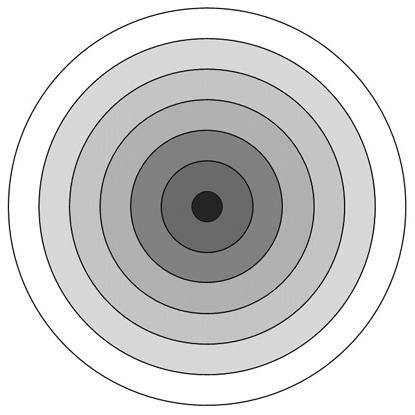

Concentric planes of existence. A stylised diagram. Here the physical is at the center, represented as teh denser darker region, while around it are are a series of progressively more subtle and light regions. Based on a diagram at Esoteric Science ( The Multi-dimensional Universe) The theme of concentric planes or universes is also found in Kabbalah. Of course, all these are stylisedrepresentations, as the planes of existence do not actually have a spatial relationship with each other; except for the Physical, all teh planes are beyond space and time, and hence cannot be represented in terms of spatial relationships.